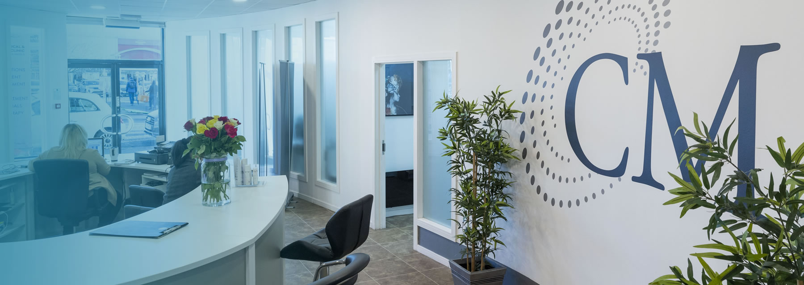

Com mais de 20 anos de experiência na indústria, oferecemos consultas em nossa clínica West end, onde um plano individualizado será oferecido para ajudá-lo a alcançar uma aparência jovem e fresca que pareça natural. Não importa o tipo de procedimento que você está procurando - injeções antirrugas, preenchimentos faciais, consulta médica, ou qualquer outro serviço que oferecemos, seu tratamento será excepcional.

Clínica Médica
Bem-vindo à Clinica Medica, uma clínica de estética médica que oferece os mais avançados tratamentos antienvelhecimento para homens e mulheres para restaurar um rosto, pescoço e corpo jovens.